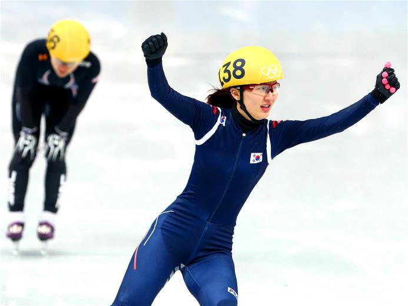

Пак выиграла 1000-метровку в шорт-треке среди женщин


Спортсменка из Южной Кореи Пак Сын Хи выиграла в пятницу титул олимпийской чемпионки в женском шорт-треке на дистанции 1000 метров. Эта медаль стала для нее третьей на Играх в Сочи.
Пак опередила на финише китаянку Фан Кесин, показав время 1:30,761. Обладательница серебряной медали Фан пробежала дистанцию за 1:30,811, на третьем месте оказалась еще одна представительница Южной Кореи Шим Сук Хи с результатом 1:31,027.